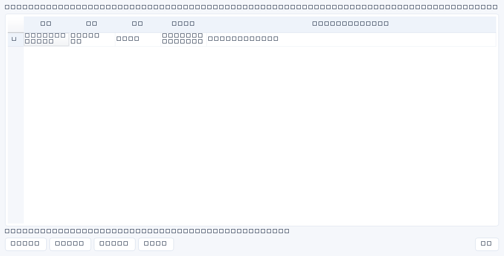

证据字段仍然是文本索引；需要保管真实文件时，用列表中的“证据附件…”把文件受控保存到服务端数据目录，并记录大小与 SHA-256。系统只存不解析：不会打开、预览、解压或执行任何附件。
允许与拒绝
| 项目 | 规则 |
|---|---|
| 单文件大小 | 上限 10 MiB；空文件拒绝。 |
| 单记录数量 | 最多 20 个；删除后可释放配额。 |
| 允许类型 | pdf、图片、文本、Office、压缩包、日志、配置、邮件、pcap 等常见证据类型。 |
| 拒绝类型 | 可执行与脚本类（exe、dll、bat、cmd、ps1、js、vbs、scr、msi、lnk、jar、sh、py 等）；无后缀也拒绝；双扩展名伪装按最后一段判断。 |
| 文件名 | 只作显示用途，路径分隔符与 `..` 会被剥离；存储路径永远由服务端生成的ID决定，用户文件名不会拼进路径。 |
操作
- 在业务列表选择已保存的记录，点击“证据附件…”。
- “上传附件…”选择文件并确认；上传后列表显示名称、大小、说明、上传时间与哈希前12位。
- “完整性校验”对所选附件重新计算哈希：通过表示文件与服务端记录一致；失败表示文件被改动或丢失，需要按证据流程处理。
- “下载所选…”保存到本机——系统不会自动打开；请用受控软件查看，并注意本地副本的敏感级别。
- “删除所选”会同时移除文件与元数据，删除前请确认已有其它留存方式。
边界：附件库不是合规归档系统：没有版本冻结、法律留存期、WORM 或异地多副本保证；数据库备份与附件目录需要一起备份，否则恢复后会出现“有记录无文件”。上传即代表你确认该文件可以存放在服务端数据目录。

